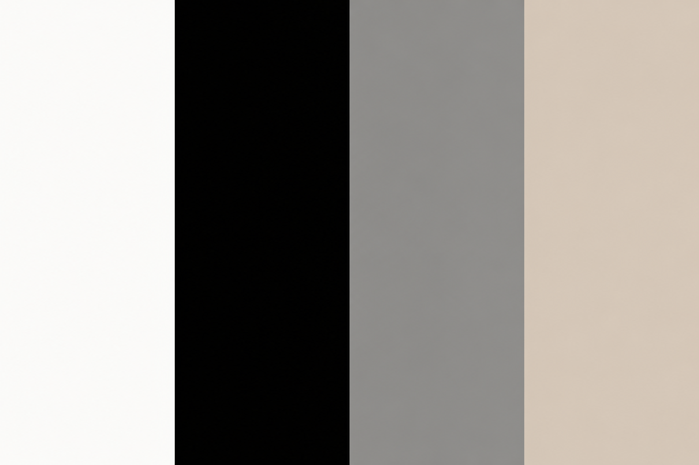
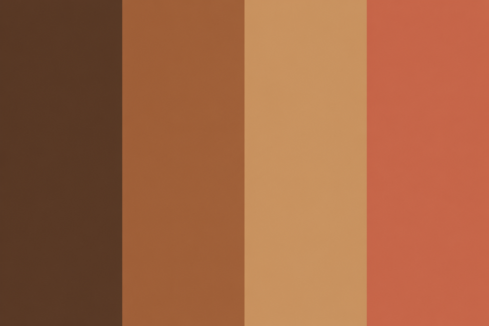
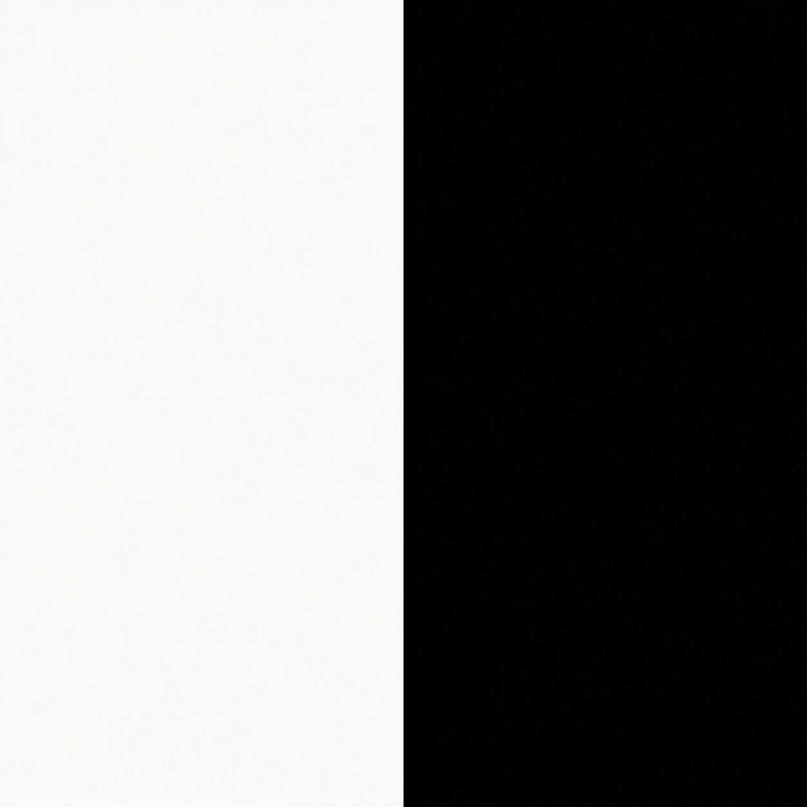
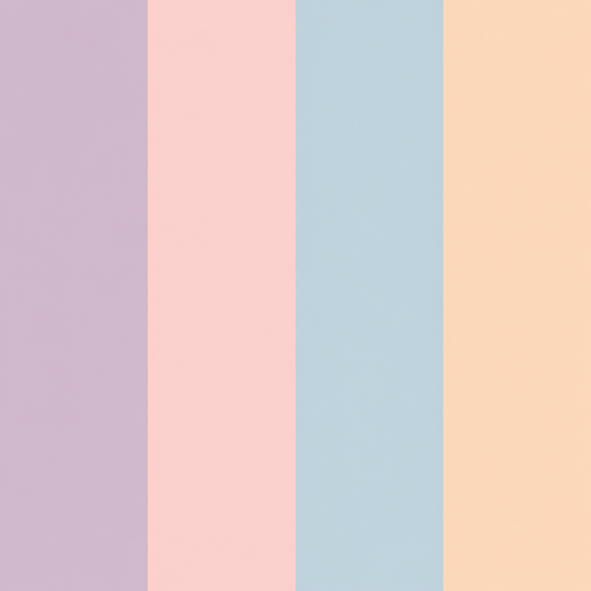
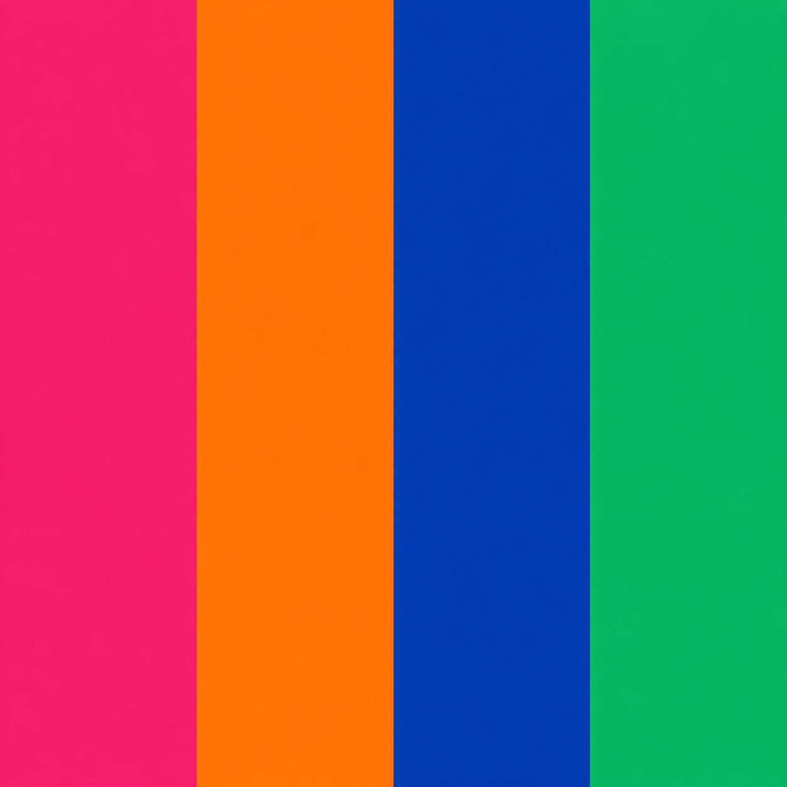
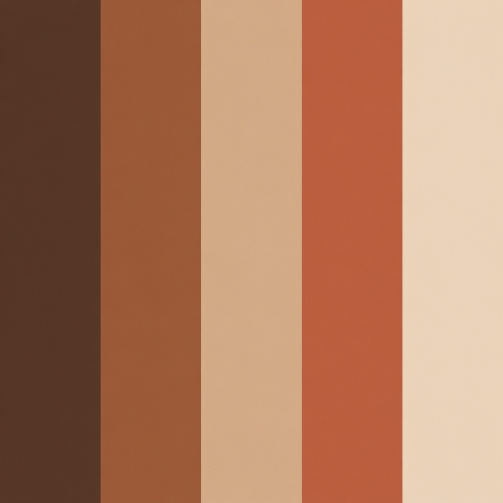

Neutros
Blanco, negro, gris y beige para looks versátiles y atemporales.
Inspiración de outfits organizada a partir de gamas cromáticas y combinaciones de color.

Blanco, negro, gris y beige para looks versátiles y atemporales.

Combinaciones cálidas inspiradas en marrones, ocres y terracotas.

Una propuesta clásica de alto contraste.

Outfits suaves y delicados con una estética liviana y actual.

Colores intensos para looks más expresivos y originales.
Tonos tierra
Una combinación cálida y versátil inspirada en marrones, beige y terracotas. Ideal para crear outfits equilibrados, atemporales y fáciles de combinar.
Ver inspiración completa
Combiná tonos claros y oscuros para generar equilibrio visual.
Elegi colores de una misma gama para lograr looks más suaves.
Usá un color llamativo como punto focal y mantené el resto neutro.